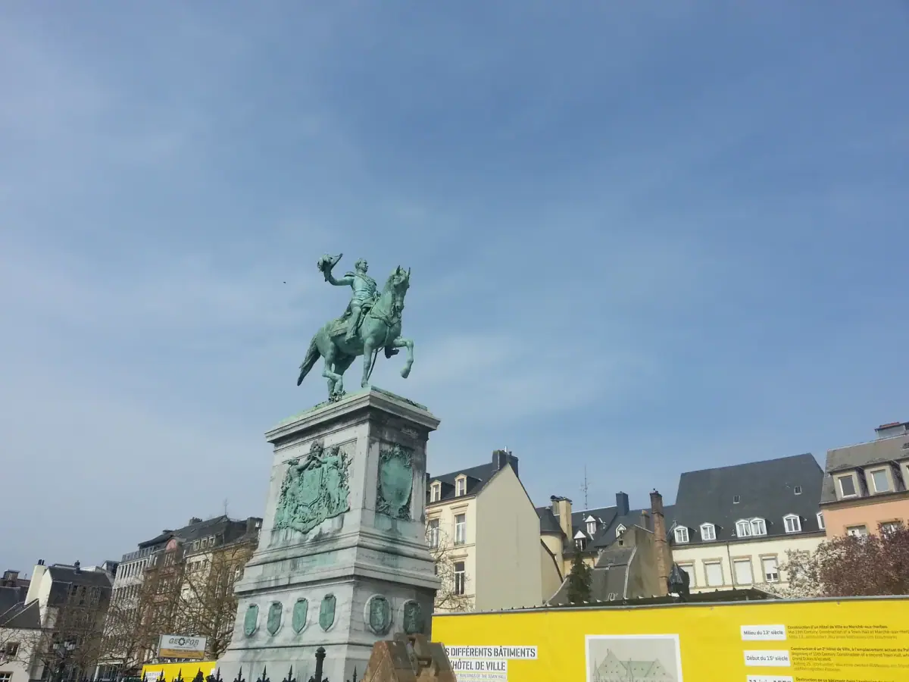
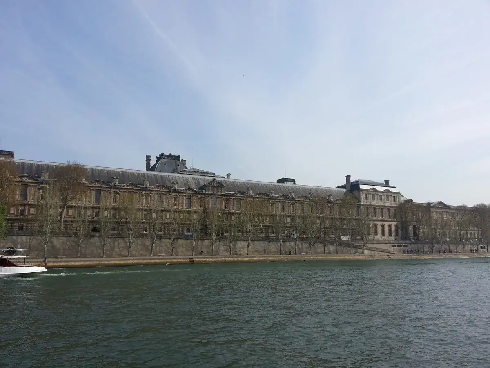
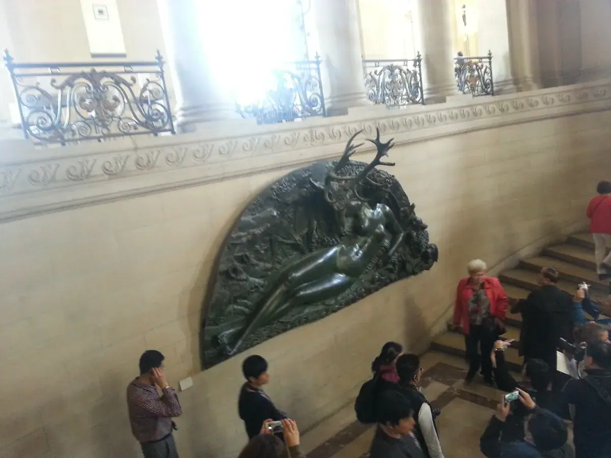
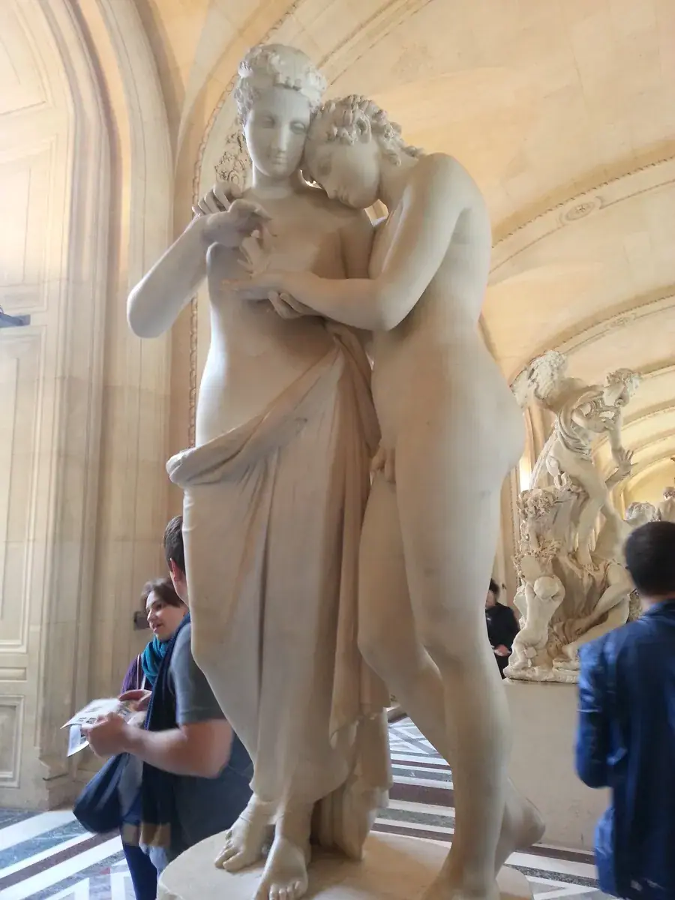
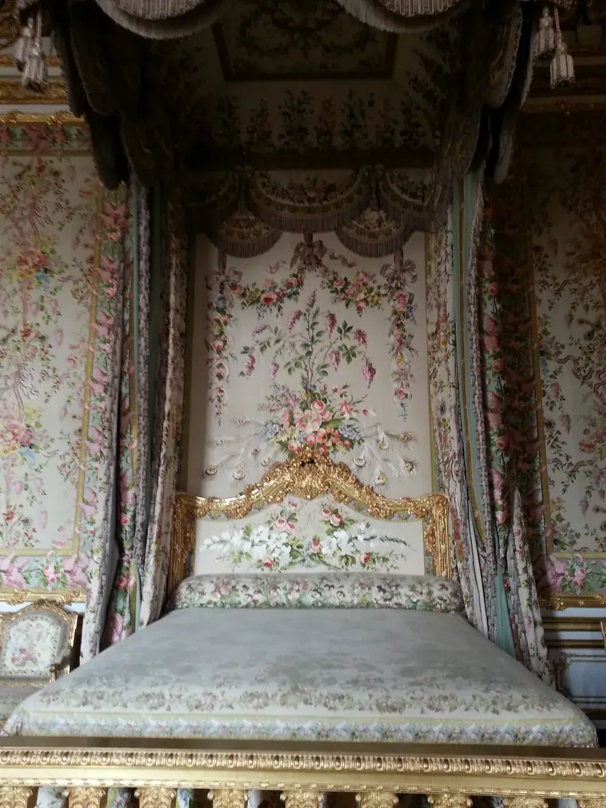

巴黎：一座连"修文物"都做成产业标准的城市
Paris — a city that turned even heritage restoration into an industry standard.

去巴黎的那趟，具体考察了哪家企业，记忆已经模糊了。但巴黎圣母院和卢浮宫这两处，留下的印象反而更清晰——尤其是巴黎圣母院，因为我看到的那个屋顶和尖塔，后来在 2019 年的一场大火里，永远地消失了。
我见过的，是后来烧毁的那个顶
2019 年 4 月 15 日，巴黎圣母院阁楼失火，大火烧穿了教堂的木质屋顶，那座 96 米高的尖塔在几分钟内倒塌。我去的时候，还是那座尖塔矗立在塞纳河畔的样子——现在回头看，那次去，其实是赶上了这座建筑存在了一百五十多年的"最后形态"的一个尾巴。
那座尖塔，其实不是巴黎圣母院最初的样子。它是 19 世纪建筑师维奥莱-勒-杜克（Eugène Viollet-le-Duc）在修复工程里重新设计并加建的，风格式修复理念也是从他这里开始，风靡了整个 19 世纪下半叶的欧洲。而屋顶那层木结构，欧洲人称之为"森林"（la forêt）——由大约 1300 根古橡木梁交织而成，很多梁料的树龄可以追溯到中世纪。2019 年那场火，某种意义上就是"烧毁了一片森林"。
大火后，法国用了五年零八个月，几乎完全按照 19 世纪的设计和工艺，重新造了一座一模一样的尖塔和屋顶，新公鸡风向标里还藏了一份写着两千名参与修复人员姓名的羊皮卷轴。2024 年 12 月，圣母院重新开放。修复团队做勘探报告近 3000 页，光是石材翻新就有 4 万多平方米。
这件事对我触动最大的地方在于：法国人对待一座建筑，愿意花五年时间、几千名工匠、近三千页的勘探报告，只为了"复刻"，而不是"重建成别的样子"。这背后不是情怀，是一整套关于文物修复、传统工艺传承的产业标准和国家意志——这套标准本身，某种程度上也是法国这个国家的一张"隐形出口名片"：工艺、审美、标准、品牌，这几样东西，恰恰是很多出海企业最难跨过去的门槛。


卢浮宫：一场关于"谁有资格定义传统"的争论
卢浮宫本身始建于 12 世纪末，最初是座防御城堡，历经几百年扩建才变成今天的规模。但真正让我印象深刻的，是那座玻璃金字塔——1983 年，法国总统密特朗力排众议，选中了美籍华裔建筑师贝聿铭的设计方案，要在这座八百年历史的法国文艺复兴建筑群中央，放一座纯玻璃钢结构的现代主义金字塔。
当时 90% 的巴黎人反对，理由五花八门：现代主义风格跟卢浮宫的古典风格不协调，金字塔是古埃及的死亡象征，一个美籍华人不够"懂"法国文化。争议持续了好几年，贝聿铭本人在巴黎街头都遭过白眼。但密特朗坚持了下来，1989 年金字塔建成——今天它已经是全球游客心目中巴黎最经典的地标之一。
这段历史给我的启发是：一个真正自信的文化，敢于让一个"外来者"来重新定义自己最核心的传统符号。这跟巴黎圣母院那种"原样复刻"的执念，看起来矛盾，其实是同一种自信的两种表达——法国人对"传统"的态度不是僵化地守着不变，而是清楚知道什么值得原样保留、什么可以被重新定义，而这个判断力本身，就是一种极高的文化话语权。


一个真正自信的文化，敢让"外来者"来重新定义自己最核心的传统符号——这种自信，比守着传统本身更难得。
——董立鑫 海鑫汇创始人兼执行总裁，新加坡世贸秘书长兼首席运营官
街景：奥斯曼男爵留下的城市轴线
走在巴黎街头，那种笔直、开阔、两侧建筑高度整齐划一的林荫大道感，不是自然长出来的，是 19 世纪奥斯曼男爵主持的巴黎大改造留下的产物。他用理性主义的空间规划——整齐、对称、轴线——把巴黎从一座中世纪古城，直接改造成了现代大都市的雏形，这套规划逻辑甚至比后来被称为"现代建筑"的思潮还要早上几十年。有意思的是，贝聿铭设计玻璃金字塔的时候，特意把它放在了奥斯曼男爵当年确立的那条巴黎城市轴线上——从卢浮宫到凯旋门那条笔直的视觉通廊，金字塔正好卡在这条线的起点上。一百多年后的建筑师，向一百多年前的城市规划师，做了一次隔空的致敬。
这一站留下的判断
巴黎圣母院的"原样复刻"，卢浮宫金字塔的"大胆颠覆"，奥斯曼大道的"理性规划"——表面看是三种完全不同的态度，但背后是同一件事：这座城市对自己的文化资产，有极强的话语权和判断力，知道什么时候该守、什么时候该破。
对中国企业出海来说，这其实是一个值得反复咀嚼的样本——真正的品牌和文化资产，不是靠模仿别人积累出来的，而是靠这种"该守就守到近乎偏执，该破就破得毫不含糊"的判断力，一代一代攒出来的。
本文整理自董立鑫（Bruce Dong）海外产业考察记录，首发于海鑫汇。